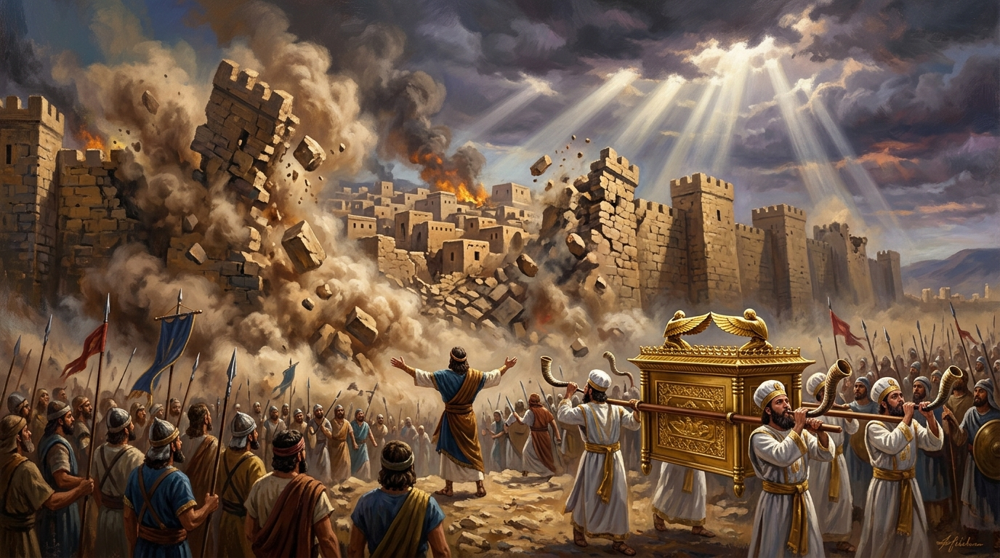
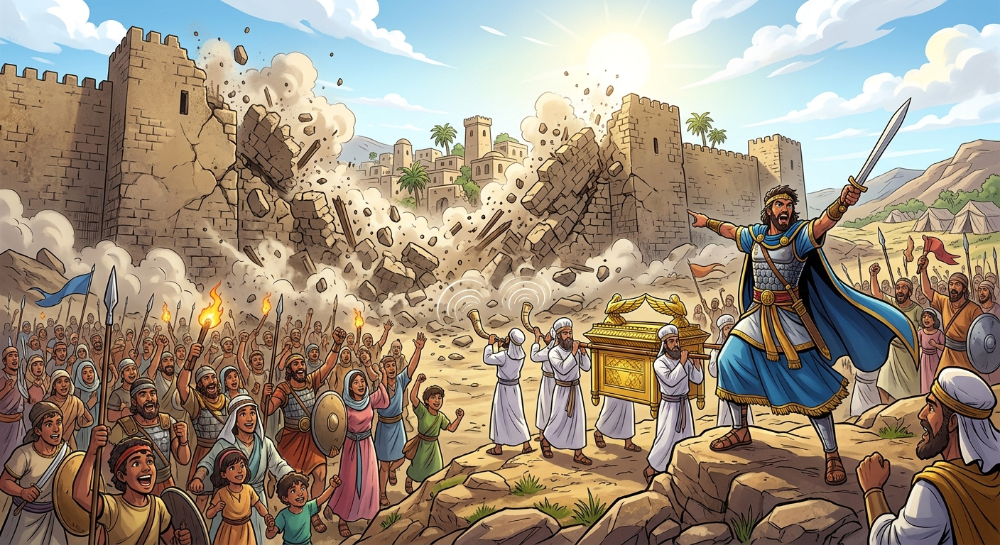
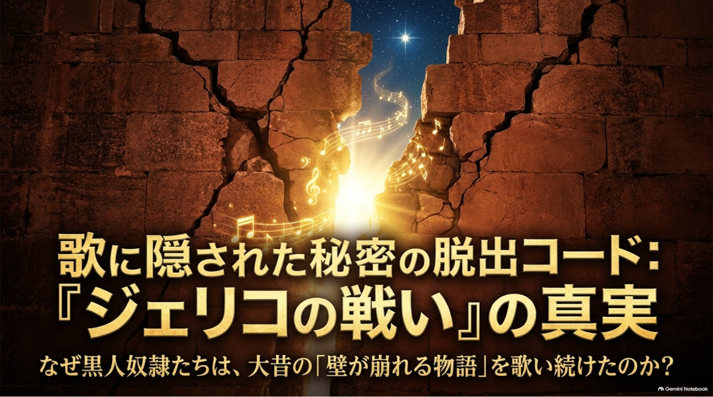

表に聞こえる意味
歌を聴いて、すぐ分かる意味です。
ヨシュアたちが角笛を鳴らし、声を上げると、ジェリコの城壁が崩れた。

60秒でわかる
コンクールで歌う曲の、もとになった話です。聖書という古い本に出てきます。リーダーの名前はヨシュア。町の名前は、聖書ではエリコ、歌ではジェリコ。同じ町です。
町は高い石の壁に囲まれていて、門は閉まっていました。
6日間は、1日に1周。7日目だけ、7周歩きます。このあいだは、まだ声を上げません。
角笛を吹く人が、合図を出します。そのあと、全員が同じタイミングで声を上げます。
一人の大声で崩れたのではありません。同じ瞬間に重なった声で、壁は崩れ落ちました。

一人の力では動かせない壁も、みんなが同じ思いで動くと越えられる。
このページの中心
この歌は、昔のアメリカで生まれました。アフリカ系の人たちが、つらい暮らしの中で、信仰の気持ちを歌にしたものです。こういう歌を、スピリチュアルといいます。物語は一つ。意味は、二つあります。金色のボタンを押してみてください。
歌を聴いて、すぐ分かる意味です。
ヨシュアたちが角笛を鳴らし、声を上げると、ジェリコの城壁が崩れた。
歌っていた人たちが、心の中で重ねていた意味です。
目の前の「壁」は、奴隷制度や抑圧。
城壁が崩れる物語に、自由と解放への願いを重ねて歌った。
奴隷制度は、人を自分の持ち物のようにして、自由をうばっていた仕組みです。抑圧は、力でおさえつけることです。壁は、町の石だけではありません。自由をじゃまするもののたとえにもなりました。
スピリチュアルには、聖書の物語を歌いながら、その奥に自由や解放への願いを重ねたものがあります。このような二重の意味は、ときに歌う人たちだけが理解できる「暗号」の役割も果たしました。
この歌のすべてが、逃げるための暗号だった、と決めつけることはできません。暗号がどのくらい使われたかは、今でも研究が続いています。アメリカの国立公園局の教材では、聖書の物語に、自分たちの苦しさや、自由への希望を重ねて歌っていた、と説明しています。
同じテーマを、図でたどるスライドもあります。表の物語と、歌に重ねられた意味を、この場で順に見られます。
1 / 15

では、私たちがこの歌で越えたい「壁」は何だろう？
私たちの壁を見る口にする言葉
アメリカに伝わる英語の詞です。作者の名前は残っていません。下の日本語は、このページのために訳しました。クラスの楽譜とは、単語が少し違うことがあります。くり返しは、節と節のあいだでもう一度歌います。奥の意味は、二つの意味に書いてあります。ここにある日本語は、言葉をそのまま読んだときの意味です。
英語
Joshua fit the battle of Jericho,
Jericho, Jericho,
Joshua fit the battle of Jericho,
And the walls came tumbling down.
日本語
ヨシュアは、ジェリコで戦った。
ジェリコ、ジェリコ。
ヨシュアは、ジェリコで戦った。
そして、城壁は崩れ落ちた。
英語
You may talk about your king of Gideon,
You may talk about your man of Saul,
There's none like good old Joshua
At the battle of Jericho.
日本語
ギデオンの王のことを語ってもよい。
サウルの家来のことを語ってもよい。
それでもジェリコの戦いでは、
あのヨシュアほど心強い人はいない。
英語
Up to the walls of Jericho
He marched with spear in hand.
“Go blow them ram horns,” Joshua cried,
“'Cause the battle is in my hand.”
日本語
ジェリコの城壁のすぐ前まで、
彼は槍を手に進んでいった。
「角笛を吹くのだ」と、ヨシュアは叫んだ。
「この戦いは、わたしの手のうちにある。」
英語
Then the lamb, ram, sheep horns begin to blow,
The trumpets begin to sound.
Joshua commanded the children to shout,
And the walls came tumbling down.
日本語
やがて、羊の角で作った笛が鳴り始めた。
ラッパも鳴り響いた。
ヨシュアは、ともに来た人々に声を上げよと命じた。
そして、城壁は崩れ落ちた。
聴きどころ
音源と楽譜は、準備できてから追加します。言葉そのものは、歌詞にあります。ここでは、歌の流れをたどります。強弱は、練習で決めます。正解はないので、歌いたい声を一つ選んでください。選んだものは、このスマホやパソコンに残ります。
「ジェリコ」という言葉が、何度も繰り返されます。町に近づいていく足音のような部分です。
どんな声で歌いたい？
一人の声から、みんなの声へ。人数が増えて、厚くなっていくところです。
どんな声で歌いたい？
角笛が鳴る場面です。急がず、拍を一緒に踏んで、声を重ねます。
どんな声で歌いたい？
英語の歌詞では、And the walls came tumbling down. 「壁が崩れ落ちた」という一句です。日本語で歌うときも、ここが山です。大声くらべではなく、全員が同じ瞬間に届けるところです。
どんな声で歌いたい？
最初の繰り返しに戻ります。残したいのは、勝ったという感じだけではありません。壁を越えたあとの、明るい響きです。
どんな声で歌いたい？
自分の場所
自分のパートを選んでください。楽譜はまだないので、これは「そのパートが担うと、歌がどう聞こえるか」のイメージです。楽譜が来たら、自分の音と照らし合わせてください。
旋律をはっきり歌って、会場の後ろの人にも物語が分かるようにします。まわりの声が厚くなっても、言葉は聞き取れるままにします。
リズムを内側から支えます。ソプラノと重なるところで、ばらばらの声を、一つの響きに変えます。
低い声で、全体を安定させます。壁が崩れる瞬間は、音が下へ落ちる動きを、人数でつくります。
クラスの前にあるもの
ジェリコの壁は、町を囲む石の壁でした。歌っていた人たちの壁は、自由をうばう仕組みでした。私たちの壁は、合唱の練習の中にあります。誰か一人が悪い、という話ではありません。レンガをタップすると、越え方のヒントが出ます。
最初の一周は、大きくなくていい。となりの声に、自分の声を重ねることから始める。
まず自分のパートだけで、1分聴き合う。そろってから、他のパートの声を聴きにいく。
むずかしい音の直前で、息を一緒に吸う。音を当てにいくより、入るタイミングを揃える。
繰り返す「ジェリコ」は、全員の出番です。一人がぬけると、そろった声になりません。
緊張は、7日目の合図です。消そうとしなくていい。同じ方向へ向ければ、力になります。
10月25日まで
クラスでたどり着きたい目標です。できた項目をチェックすると、下の石が崩れます。チェックは、今開いているスマホやパソコンに残ります。
壁を崩すのは、一人の大声ではない。
一人ひとりの声が、同じ方向を向いた瞬間だ。
私たちの「ジェリコの戦い」を、会場に響かせよう。